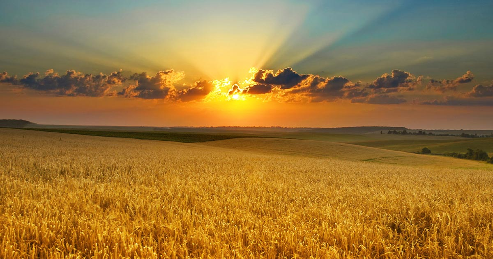

Distâncias que se Aproximam
"O campo e a cidade representam dois mundos distintos, mas profundamente interconectados. Enquanto o campo é marcado por vastas áreas de cultivo, criação de animais e uma vida mais tranquila, a cidade se caracteriza pela agitação, infraestrutura avançada e uma economia diversificada. Apesar das diferenças, ambos os espaços dependem um do outro para funcionar adequadamente. O campo, com suas atividades agropecuárias, fornece à cidade alimentos, matérias-primas e recursos naturais essenciais. Por outro lado, a cidade oferece ao campo infraestrutura, tecnologia, serviços de saúde e educação, além de mercados consumidores para os produtos rurais. Essa interdependência é fundamental para o desenvolvimento econômico e social de ambos os espaços. No entanto, essa relação também apresenta desafios. A urbanização crescente tem levado ao êxodo rural, com muitas pessoas deixando o campo em busca de melhores oportunidades nas cidades. Esse movimento pode resultar na perda de tradições culturais e na sobrecarga das infraestruturas urbanas. Por outro lado, o campo enfrenta questões como o acesso limitado a serviços básicos e a necessidade de modernização das técnicas agrícolas." em: https://brasilescola.uol.com.br/o-que-e/geografia/o-que-e-agricultura.htm 
Conexões e Desafios
"A relação entre o campo e a cidade é um reflexo das transformações sociais, econômicas e culturais ao longo da história. Enquanto o campo representa a origem da produção de alimentos e recursos naturais, a cidade simboliza o centro de inovação, comércio e serviços. Essa divisão, no entanto, não é rígida; há uma constante troca e adaptação entre os dois espaços. Historicamente, o campo foi visto como o local de origem dos produtos que abasteciam as cidades. Com o tempo, as cidades passaram a influenciar o campo por meio da introdução de tecnologias, práticas agrícolas modernas e acesso a mercados mais amplos. Essa dinâmica tem levado a uma crescente urbanização, com muitas pessoas migrando para as cidades em busca de melhores condições de vida. Contudo, essa migração também trouxe desafios, como a superlotação urbana, aumento da desigualdade social e pressão sobre os recursos urbanos. Além disso, o campo enfrenta o desafio de manter sua identidade cultural e ambiental diante das pressões externas. É fundamental, portanto, que haja um planejamento integrado que considere as necessidades e potencialidades de ambos os espaços, promovendo uma convivência harmoniosa e sustentável. Em resumo, a relação entre o campo e a cidade é complexa e multifacetada. Reconhecer e valorizar as contribuições de cada um é essencial para construir uma sociedade mais justa e equilibrada, onde as diferenças são respeitadas e as interdependências são fortalecidas." em: https://brasilescola.uol.com.br/o-que-e/geografia/o-que-e-agricultura.htm